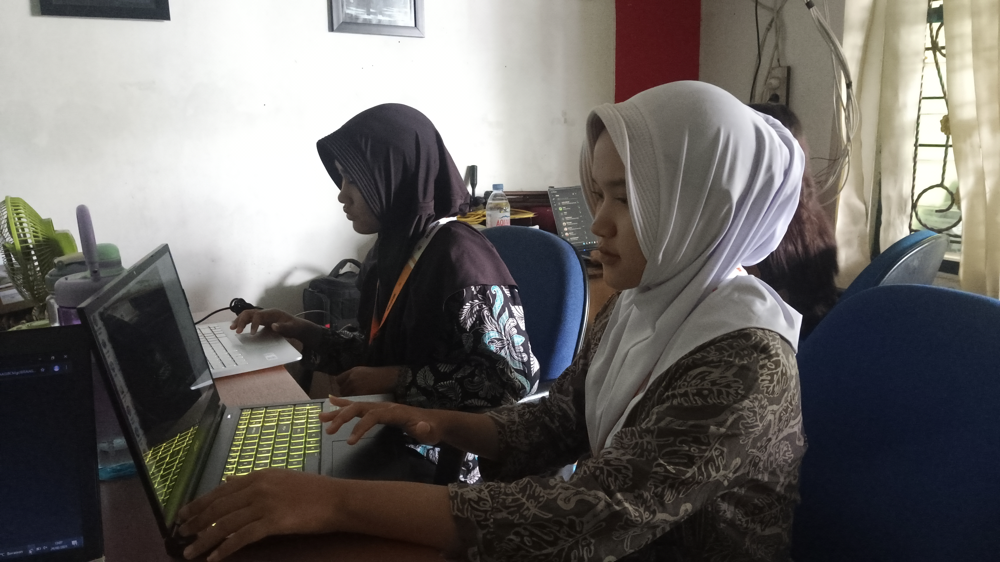

Arly
Saya adalah seorang siswi yang suka membuat website rapi dan nyaman dipakai. Saya seorang
Kenali saya lebih dekat.
Kemampuan yang sedang saya asah.
Karya yang sudah saya buat.
Perjalanan belajar saya.
Ayo ngobrol atau berkolaborasi.